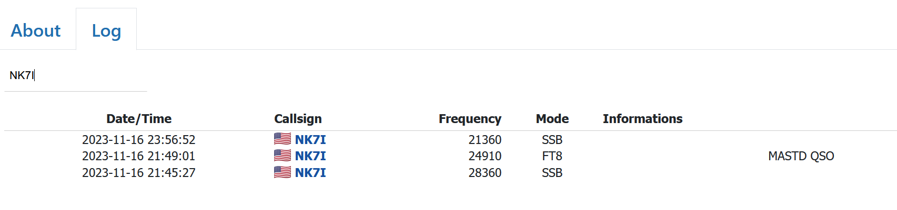

Bugger it's SLOW to respond. Probably an over taxed
server gagging under the load of inadequate pathways; IF they have
usable internet on the island... and it seems they do, mostly so
it's a slow server.
But; once it comes up, you can confirm that you're in their log
(sorta mostly like Clublog, just SLOW and less glitz). Enter your
call (NOT on the top line but where it shows the latest calls in
the log), press enter, check on the kids, say hi to the spouse,
eat a meal out, take a nap or just wait... and wait...
I see them still working US on 20 and 17M (and spot alerts too)
but the high bands are shut down for the night here (as in NOPE).
VOAProp and other apps; are all wrong, high bands are dead here.
Day 1 of 3 is over, get to work!
GOOD LUCK, so far they have not provided a lot of signal, except 12 FT8 would have been a fair CW signal level too (THAT'LL be fun...). The crowds are unruly and there must be a circus too ... you get it.
This one, so far, is meager for being so close. It'll take some
effort. Having an online log for this one, very smart to reduce
insurance dupes. The pileups too are pretty intense.
73,
Rick nk7i
https://hampass.org/2023-pr0t/log Click on the LOG tab, wait and
hope for the latest showing.
